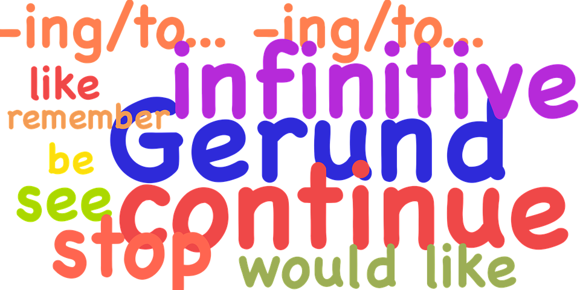

Assignment 2: Parts-of-Speech Tagging (POS)
Welcome to the second assignment of Course 2 in the Natural Language Processing specialization. This assignment will develop skills in part-of-speech (POS) tagging, the process of assigning a part-of-speech tag (Noun, Verb, Adjective…) to each word in an input text. Tagging is difficult because some words can represent more than one part of speech at different times. They are Ambiguous. Let’s look at the following example:
- The whole team played well. [adverb]
- You are doing well for yourself. [adjective]
- Well, this assignment took me forever to complete. [interjection]
- The well is dry. [noun]
- Tears were beginning to well in her eyes. [verb]
Distinguishing the parts-of-speech of a word in a sentence will help you better understand the meaning of a sentence. This would be critically important in search queries. Identifying the proper noun, the organization, the stock symbol, or anything similar would greatly improve everything ranging from speech recognition to search. By completing this assignment, you will:
- Learn how parts-of-speech tagging works
- Compute the transition matrix A in a Hidden Markov Model
- Compute the transition matrix B in a Hidden Markov Model
- Compute the Viterbi algorithm
- Compute the accuracy of your own model
Outline
1 | # Importing packages and loading in the data set |
Part 0: Data Sources
This assignment will use two tagged data sets collected from the Wall Street Journal (WSJ).
Here is an example ‘tag-set’ or Part of Speech designation describing the two or three letter tag and their meaning.
- One data set (WSJ-2_21.pos) will be used for training.
- The other (WSJ-24.pos) for testing.
- The tagged training data has been preprocessed to form a vocabulary (hmm_vocab.txt).
- The words in the vocabulary are words from the training set that were used two or more times.
- The vocabulary is augmented with a set of ‘unknown word tokens’, described below.
The training set will be used to create the emission, transmission and tag counts.
The test set (WSJ-24.pos) is read in to create y.
- This contains both the test text and the true tag.
- The test set has also been preprocessed to remove the tags to form test_words.txt.
- This is read in and further processed to identify the end of sentences and handle words not in the vocabulary using functions provided in utils_pos.py.
- This forms the list
prep, the preprocessed text used to test our POS taggers.
A POS tagger will necessarily encounter words that are not in its datasets.
- To improve accuracy, these words are further analyzed during preprocessing to extract available hints as to their appropriate tag.
- For example, the suffix ‘ize’ is a hint that the word is a verb, as in ‘final-ize’ or ‘character-ize’.
- A set of unknown-tokens, such as ‘—unk-verb—‘ or ‘—unk-noun—‘ will replace the unknown words in both the training and test corpus and will appear in the emission, transmission and tag data structures.

Implementation note:
- For python 3.6 and beyond, dictionaries retain the insertion order.
- Furthermore, their hash-based lookup makes them suitable for rapid membership tests.
- If _di_ is a dictionary,
key in diwill returnTrueif _di_ has a key _key_, elseFalse.
- If _di_ is a dictionary,
The dictionary vocab will utilize these features.
1 | # load in the training corpus |
A few items of the training corpus list
['In\tIN\n', 'an\tDT\n', 'Oct.\tNNP\n', '19\tCD\n', 'review\tNN\n']
1 | # read the vocabulary data, split by each line of text, and save the list |
A few items of the vocabulary list
['!', '#', '$', '%', '&', "'", "''", "'40s", "'60s", "'70s", "'80s", "'86", "'90s", "'N", "'S", "'d", "'em", "'ll", "'m", "'n'", "'re", "'s", "'til", "'ve", '(', ')', ',', '-', '--', '--n--', '--unk--', '--unk_adj--', '--unk_adv--', '--unk_digit--', '--unk_noun--', '--unk_punct--', '--unk_upper--', '--unk_verb--', '.', '...', '0.01', '0.0108', '0.02', '0.03', '0.05', '0.1', '0.10', '0.12', '0.13', '0.15']
A few items at the end of the vocabulary list
['yards', 'yardstick', 'year', 'year-ago', 'year-before', 'year-earlier', 'year-end', 'year-on-year', 'year-round', 'year-to-date', 'year-to-year', 'yearlong', 'yearly', 'years', 'yeast', 'yelled', 'yelling', 'yellow', 'yen', 'yes', 'yesterday', 'yet', 'yield', 'yielded', 'yielding', 'yields', 'you', 'young', 'younger', 'youngest', 'youngsters', 'your', 'yourself', 'youth', 'youthful', 'yuppie', 'yuppies', 'zero', 'zero-coupon', 'zeroing', 'zeros', 'zinc', 'zip', 'zombie', 'zone', 'zones', 'zoning', '{', '}', '']
1 | # vocab: dictionary that has the index of the corresponding words |
Vocabulary dictionary, key is the word, value is a unique integer
:0
!:1
#:2
$:3
%:4
&:5
':6
'':7
'40s:8
'60s:9
'70s:10
'80s:11
'86:12
'90s:13
'N:14
'S:15
'd:16
'em:17
'll:18
'm:19
'n':20
1 | # load in the test corpus |
A sample of the test corpus
['The\tDT\n', 'economy\tNN\n', "'s\tPOS\n", 'temperature\tNN\n', 'will\tMD\n', 'be\tVB\n', 'taken\tVBN\n', 'from\tIN\n', 'several\tJJ\n', 'vantage\tNN\n']
1 | #corpus without tags, preprocessed |
The length of the preprocessed test corpus: 34199
This is a sample of the test_corpus:
['The', 'economy', "'s", 'temperature', 'will', 'be', 'taken', 'from', 'several', '--unk--']
Part 1: Parts-of-speech tagging
Part 1.1 - Training
You will start with the simplest possible parts-of-speech tagger and we will build up to the state of the art.
In this section, you will find the words that are not ambiguous.
- For example, the word
isis a verb and it is not ambiguous. - In the
WSJcorpus, $86$% of the token are unambiguous (meaning they have only one tag) - About $14\%$ are ambiguous (meaning that they have more than one tag)

Before you start predicting the tags of each word, you will need to compute a few dictionaries that will help you to generate the tables.
Transition counts
- The first dictionary is the
transition_countsdictionary which computes the number of times each tag happened next to another tag.
This dictionary will be used to compute:
This is the probability of a tag at position $i$ given the tag at position $i-1$.
In order for you to compute equation 1, you will create a transition_counts dictionary where
- The keys are
(prev_tag, tag) - The values are the number of times those two tags appeared in that order.
Emission counts
The second dictionary you will compute is the emission_counts dictionary. This dictionary will be used to compute:
In other words, you will use it to compute the probability of a word given its tag.
In order for you to compute equation 2, you will create an emission_counts dictionary where
- The keys are
(tag, word) - The values are the number of times that pair showed up in your training set.
Tag counts
The last dictionary you will compute is the tag_counts dictionary.
- The key is the tag
- The value is the number of times each tag appeared.
Exercise 01
Instructions: Write a program that takes in the training_corpus and returns the three dictionaries mentioned above transition_counts, emission_counts, and tag_counts.
emission_counts: maps (tag, word) to the number of times it happened.transition_counts: maps (prev_tag, tag) to the number of times it has appeared.tag_counts: maps (tag) to the number of times it has occured.
Implementation note: This routine utilises defaultdict, which is a subclass of dict.
- A standard Python dictionary throws a KeyError if you try to access an item with a key that is not currently in the dictionary.
- In contrast, the defaultdict will create an item of the type of the argument, in this case an integer with the default value of 0.
- See defaultdict.
1 | # UNQ_C1 (UNIQUE CELL IDENTIFIER, DO NOT EDIT) |
1 | emission_counts, transition_counts, tag_counts = create_dictionaries(training_corpus, vocab) |
word count = 50000
word count = 100000
word count = 150000
word count = 200000
word count = 250000
word count = 300000
word count = 350000
word count = 400000
word count = 450000
word count = 500000
word count = 550000
word count = 600000
word count = 650000
word count = 700000
word count = 750000
word count = 800000
word count = 850000
word count = 900000
word count = 950000
1 | # get all the POS states |
Number of POS tags (number of 'states'): 46
View these POS tags (states)
['#', '$', "''", '(', ')', ',', '--s--', '.', ':', 'CC', 'CD', 'DT', 'EX', 'FW', 'IN', 'JJ', 'JJR', 'JJS', 'LS', 'MD', 'NN', 'NNP', 'NNPS', 'NNS', 'PDT', 'POS', 'PRP', 'PRP$', 'RB', 'RBR', 'RBS', 'RP', 'SYM', 'TO', 'UH', 'VB', 'VBD', 'VBG', 'VBN', 'VBP', 'VBZ', 'WDT', 'WP', 'WP$', 'WRB', '``']
Expected Output
1 | Number of POS tags (number of 'states'46 |
The ‘states’ are the Parts-of-speech designations found in the training data. They will also be referred to as ‘tags’ or POS in this assignment.
- “NN” is noun, singular,
- ‘NNS’ is noun, plural.
- In addition, there are helpful tags like ‘—s—‘ which indicate a start of a sentence.
- You can get a more complete description at Penn Treebank II tag set.
1 | print("transition examples: ") |
transition examples:
(('--s--', 'IN'), 5050)
(('IN', 'DT'), 32364)
(('DT', 'NNP'), 9044)
emission examples:
(('DT', 'any'), 721)
(('NN', 'decrease'), 7)
(('NN', 'insider-trading'), 5)
ambiguous word example:
('RB', 'back') 304
('VB', 'back') 20
('RP', 'back') 84
('JJ', 'back') 25
('NN', 'back') 29
('VBP', 'back') 4
Expected Output
1 | transition examples: |
Part 1.2 - Testing
Now you will test the accuracy of your parts-of-speech tagger using your emission_counts dictionary.
- Given your preprocessed test corpus
prep, you will assign a parts-of-speech tag to every word in that corpus. - Using the original tagged test corpus
y, you will then compute what percent of the tags you got correct.
Exercise 02
Instructions: Implement predict_pos that computes the accuracy of your model.
- This is a warm up exercise.
- To assign a part of speech to a word, assign the most frequent POS for that word in the training set.
- Then evaluate how well this approach works. Each time you predict based on the most frequent POS for the given word, check whether the actual POS of that word is the same. If so, the prediction was correct!
- Calculate the accuracy as the number of correct predictions divided by the total number of words for which you predicted the POS tag.
1 | # UNQ_C2 (UNIQUE CELL IDENTIFIER, DO NOT EDIT) |
1 | accuracy_predict_pos = predict_pos(prep, y, emission_counts, vocab, states) |
Accuracy of prediction using predict_pos is 0.8889
Expected Output
1 | Accuracy of prediction using predict_pos is 0.8889 |
88.9% is really good for this warm up exercise. With hidden markov models, you should be able to get 95% accuracy.
Part 2: Hidden Markov Models for POS
Now you will build something more context specific. Concretely, you will be implementing a Hidden Markov Model (HMM) with a Viterbi decoder
- The HMM is one of the most commonly used algorithms in Natural Language Processing, and is a foundation to many deep learning techniques you will see in this specialization.
- In addition to parts-of-speech tagging, HMM is used in speech recognition, speech synthesis, etc.
- By completing this part of the assignment you will get a 95% accuracy on the same dataset you used in Part 1.
The Markov Model contains a number of states and the probability of transition between those states.
- In this case, the states are the parts-of-speech.
- A Markov Model utilizes a transition matrix,
A. - A Hidden Markov Model adds an observation or emission matrix
Bwhich describes the probability of a visible observation when we are in a particular state. - In this case, the emissions are the words in the corpus
- The state, which is hidden, is the POS tag of that word.
Part 2.1 Generating Matrices
Creating the ‘A’ transition probabilities matrix
Now that you have your emission_counts, transition_counts, and tag_counts, you will start implementing the Hidden Markov Model.
This will allow you to quickly construct the
Atransition probabilities matrix.- and the
Bemission probabilities matrix.
You will also use some smoothing when computing these matrices.
Here is an example of what the A transition matrix would look like (it is simplified to 5 tags for viewing. It is 46x46 in this assignment.):
| A | … | RBS | RP | SYM | TO | UH | … |
|---|---|---|---|---|---|---|---|
| RBS | … | 2.217069e-06 | 2.217069e-06 | 2.217069e-06 | 0.008870 | 2.217069e-06 | … |
| RP | … | 3.756509e-07 | 7.516775e-04 | 3.756509e-07 | 0.051089 | 3.756509e-07 | … |
| SYM | … | 1.722772e-05 | 1.722772e-05 | 1.722772e-05 | 0.000017 | 1.722772e-05 | … |
| TO | … | 4.477336e-05 | 4.472863e-08 | 4.472863e-08 | 0.000090 | 4.477336e-05 | … |
| UH | … | 1.030439e-05 | 1.030439e-05 | 1.030439e-05 | 0.061837 | 3.092348e-02 | … |
| … | … | … | … | … | … | … | … |
Note that the matrix above was computed with smoothing.
Each cell gives you the probability to go from one part of speech to another.
- In other words, there is a 4.47e-8 chance of going from parts-of-speech
TOtoRP. - The sum of each row has to equal 1, because we assume that the next POS tag must be one of the available columns in the table.
The smoothing was done as follows:
- $N$ is the total number of tags
- $C(t_{i-1}, t_{i})$ is the count of the tuple (previous POS, current POS) in
transition_countsdictionary. - $C(t_{i-1})$ is the count of the previous POS in the
tag_countsdictionary. - $\alpha$ is a smoothing parameter.
Exercise 03
Instructions: Implement the create_transition_matrix below for all tags. Your task is to output a matrix that computes equation 3 for each cell in matrix A.
1 | # UNQ_C3 (UNIQUE CELL IDENTIFIER, DO NOT EDIT) |
1 | alpha = 0.001 |
A at row 0, col 0: 0.000007040
A at row 3, col 1: 0.1691
View a subset of transition matrix A
RBS RP SYM TO UH
RBS 2.217069e-06 2.217069e-06 2.217069e-06 0.008870 2.217069e-06
RP 3.756509e-07 7.516775e-04 3.756509e-07 0.051089 3.756509e-07
SYM 1.722772e-05 1.722772e-05 1.722772e-05 0.000017 1.722772e-05
TO 4.477336e-05 4.472863e-08 4.472863e-08 0.000090 4.477336e-05
UH 1.030439e-05 1.030439e-05 1.030439e-05 0.061837 3.092348e-02
Expected Output
1 | A at row 0, col 0: 0.000007040 |
Create the ‘B’ emission probabilities matrix
Now you will create the B transition matrix which computes the emission probability.
You will use smoothing as defined below:
- $C(t_i, word_i)$ is the number of times $word_i$ was associated with $tag_i$ in the training data (stored in
emission_countsdictionary). - $C(t_i)$ is the number of times $tag_i$ was in the training data (stored in
tag_countsdictionary). - $N$ is the number of words in the vocabulary
- $\alpha$ is a smoothing parameter.
The matrix B is of dimension (num_tags, N), where num_tags is the number of possible parts-of-speech tags.
Here is an example of the matrix, only a subset of tags and words are shown:
B Emissions Probability Matrix (subset)
| B | … | 725 | adroitly | engineers | promoted | synergy | … |
|---|---|---|---|---|---|---|---|
| CD | … | 8.201296e-05 | 2.732854e-08 | 2.732854e-08 | 2.732854e-08 | 2.732854e-08 | … |
| NN | … | 7.521128e-09 | 7.521128e-09 | 7.521128e-09 | 7.521128e-09 | 2.257091e-05 | … |
| NNS | … | 1.670013e-08 | 1.670013e-08 | 4.676203e-04 | 1.670013e-08 | 1.670013e-08 | … |
| VB | … | 3.779036e-08 | 3.779036e-08 | 3.779036e-08 | 3.779036e-08 | 3.779036e-08 | … |
| RB | … | 3.226454e-08 | 6.456135e-05 | 3.226454e-08 | 3.226454e-08 | 3.226454e-08 | … |
| RP | … | 3.723317e-07 | 3.723317e-07 | 3.723317e-07 | 3.723317e-07 | 3.723317e-07 | … |
| … | … | … | … | … | … | … | … |
Exercise 04
Instructions: Implement the create_emission_matrix below that computes the B emission probabilities matrix. Your function takes in $\alpha$, the smoothing parameter, tag_counts, which is a dictionary mapping each tag to its respective count, the emission_counts dictionary where the keys are (tag, word) and the values are the counts. Your task is to output a matrix that computes equation 4 for each cell in matrix B.
1 | # UNQ_C4 (UNIQUE CELL IDENTIFIER, DO NOT EDIT) |
1 | # creating your emission probability matrix. this takes a few minutes to run. |
View Matrix position at row 0, column 0: 0.000006032
View Matrix position at row 3, column 1: 0.000000720
725 adroitly engineers promoted synergy
CD 8.201296e-05 2.732854e-08 2.732854e-08 2.732854e-08 2.732854e-08
NN 7.521128e-09 7.521128e-09 7.521128e-09 7.521128e-09 2.257091e-05
NNS 1.670013e-08 1.670013e-08 4.676203e-04 1.670013e-08 1.670013e-08
VB 3.779036e-08 3.779036e-08 3.779036e-08 3.779036e-08 3.779036e-08
RB 3.226454e-08 6.456135e-05 3.226454e-08 3.226454e-08 3.226454e-08
RP 3.723317e-07 3.723317e-07 3.723317e-07 3.723317e-07 3.723317e-07
Expected Output
1 | View Matrix position at row 0, column 0: 0.000006032 |
Part 3: Viterbi Algorithm and Dynamic Programming
In this part of the assignment you will implement the Viterbi algorithm which makes use of dynamic programming. Specifically, you will use your two matrices, A and B to compute the Viterbi algorithm. We have decomposed this process into three main steps for you.
- Initialization - In this part you initialize the
best_pathsandbest_probabilitiesmatrices that you will be populating infeed_forward. - Feed forward - At each step, you calculate the probability of each path happening and the best paths up to that point.
- Feed backward: This allows you to find the best path with the highest probabilities.
Part 3.1: Initialization
You will start by initializing two matrices of the same dimension.
best_probs: Each cell contains the probability of going from one POS tag to a word in the corpus.
best_paths: A matrix that helps you trace through the best possible path in the corpus.
Exercise 05
Instructions:
Write a program below that initializes the best_probs and the best_paths matrix.
Both matrices will be initialized to zero except for column zero of best_probs.
- Column zero of
best_probsis initialized with the assumption that the first word of the corpus was preceded by a start token (“—s—“). - This allows you to reference the A matrix for the transition probability
Here is how to initialize column 0 of best_probs:
- The probability of the best path going from the start index to a given POS tag indexed by integer $i$ is denoted by $\textrm{best_probs}[s_{idx}, i]$.
- This is estimated as the probability that the start tag transitions to the POS denoted by index $i$: $\mathbf{A}[s_{idx}, i]$ AND that the POS tag denoted by $i$ emits the first word of the given corpus, which is $\mathbf{B}[i, vocab[corpus[0]]]$.
- Note that vocab[corpus[0]] refers to the first word of the corpus (the word at position 0 of the corpus).
- vocab is a dictionary that returns the unique integer that refers to that particular word.
Conceptually, it looks like this:
$\textrm{best_probs}[s_{idx}, i] = \mathbf{A}[s_{idx}, i] \times \mathbf{B}[i, corpus[0] ]$
In order to avoid multiplying and storing small values on the computer, we’ll take the log of the product, which becomes the sum of two logs:
$best_probs[i,0] = log(A[s_{idx}, i]) + log(B[i, vocab[corpus[0]]$
Also, to avoid taking the log of 0 (which is defined as negative infinity), the code itself will just set $best_probs[i,0] = float(‘-inf’)$ when $A[s_{idx}, i] == 0$
So the implementation to initialize $best_probs$ looks like this:
$ if A[s_{idx}, i] <> 0 : best_probs[i,0] = log(A[s_{idx}, i]) + log(B[i, vocab[corpus[0]]])$
$ if A[s_{idx}, i] == 0 : best_probs[i,0] = float(‘-inf’)$
Please use math.log to compute the natural logarithm.
The example below shows the initialization assuming the corpus starts with the phrase “Loss tracks upward”.

Represent infinity and negative infinity like this:
1 | float('inf') |
1 | # UNQ_C5 (UNIQUE CELL IDENTIFIER, DO NOT EDIT) |
1 | best_probs, best_paths = initialize(states, tag_counts, A, B, prep, vocab) |
1 | # Test the function |
best_probs[0,0]: -22.6098
best_paths[2,3]: 0.0000
Expected Output
1 | best_probs[0,0]: -22.6098 |
Part 3.2 Viterbi Forward
In this part of the assignment, you will implement the viterbi_forward segment. In other words, you will populate your best_probs and best_paths matrices.
- Walk forward through the corpus.
- For each word, compute a probability for each possible tag.
- Unlike the previous algorithm
predict_pos(the ‘warm-up’ exercise), this will include the path up to that (word,tag) combination.
Here is an example with a three-word corpus “Loss tracks upward”:
- Note, in this example, only a subset of states (POS tags) are shown in the diagram below, for easier reading.
- In the diagram below, the first word “Loss” is already initialized.
- The algorithm will compute a probability for each of the potential tags in the second and future words.
Compute the probability that the tag of the second work (‘tracks’) is a verb, 3rd person singular present (VBZ).
- In the
best_probsmatrix, go to the column of the second word (‘tracks’), and row 40 (VBZ), this cell is highlighted in light orange in the diagram below. - Examine each of the paths from the tags of the first word (‘Loss’) and choose the most likely path.
- An example of the calculation for one of those paths is the path from (‘Loss’, NN) to (‘tracks’, VBZ).
- The log of the probability of the path up to and including the first word ‘Loss’ having POS tag NN is $-14.32$. The
best_probsmatrix contains this value -14.32 in the column for ‘Loss’ and row for ‘NN’. - Find the probability that NN transitions to VBZ. To find this probability, go to the
Atransition matrix, and go to the row for ‘NN’ and the column for ‘VBZ’. The value is $4.37e-02$, which is circled in the diagram, so add $-14.32 + log(4.37e-02)$. - Find the log of the probability that the tag VBS would ‘emit’ the word ‘tracks’. To find this, look at the ‘B’ emission matrix in row ‘VBZ’ and the column for the word ‘tracks’. The value $4.61e-04$ is circled in the diagram below. So add $-14.32 + log(4.37e-02) + log(4.61e-04)$.
- The sum of $-14.32 + log(4.37e-02) + log(4.61e-04)$ is $-25.13$. Store $-25.13$ in the
best_probsmatrix at row ‘VBZ’ and column ‘tracks’ (as seen in the cell that is highlighted in light orange in the diagram). - All other paths in best_probs are calculated. Notice that $-25.13$ is greater than all of the other values in column ‘tracks’ of matrix
best_probs, and so the most likely path to ‘VBZ’ is from ‘NN’. ‘NN’ is in row 20 of thebest_probsmatrix, so $20$ is the most likely path. - Store the most likely path $20$ in the
best_pathstable. This is highlighted in light orange in the diagram below.
The formula to compute the probability and path for the $i^{th}$ word in the $corpus$, the prior word $i-1$ in the corpus, current POS tag $j$, and previous POS tag $k$ is:
$\mathrm{prob} = \mathbf{best_prob}_{k, i-1} + \mathrm{log}(\mathbf{A}_{k, j}) + \mathrm{log}(\mathbf{B}_{j, vocab(corpus_{i})})$
where $corpus_{i}$ is the word in the corpus at index $i$, and $vocab$ is the dictionary that gets the unique integer that represents a given word.
$\mathrm{path} = k$
where $k$ is the integer representing the previous POS tag.
Exercise 06
Instructions: Implement the viterbi_forward algorithm and store the best_path and best_prob for every possible tag for each word in the matrices best_probs and best_tags using the pseudo code below.
`for each word in the corpus
for each POS tag type that this word may be
for POS tag type that the previous word could be
compute the probability that the previous word had a given POS tag, that the current word has a given POS tag, and that the POS tag would emit this current word.
retain the highest probability computed for the current word
set best_probs to this highest probability
set best_paths to the index 'k', representing the POS tag of the previous word which produced the highest probability `
Please use math.log to compute the natural logarithm.

- Remember that when accessing emission matrix B, the column index is the unique integer ID associated with the word. It can be accessed by using the 'vocab' dictionary, where the key is the word, and the value is the unique integer ID for that word.
1 | # UNQ_C6 (UNIQUE CELL IDENTIFIER, DO NOT EDIT) |
Run the viterbi_forward function to fill in the best_probs and best_paths matrices.
Note that this will take a few minutes to run. There are about 30,000 words to process.
1 | # this will take a few minutes to run => processes ~ 30,000 words |
Words processed: 5000
Words processed: 10000
Words processed: 15000
Words processed: 20000
Words processed: 25000
Words processed: 30000
1 | # Test this function |
best_probs[0,1]: -24.7822
best_probs[0,4]: -49.5601
Expected Output
1 | best_probs[0,1]: -24.7822 |
Part 3.3 Viterbi backward
Now you will implement the Viterbi backward algorithm.
- The Viterbi backward algorithm gets the predictions of the POS tags for each word in the corpus using the
best_pathsand thebest_probsmatrices.
The example below shows how to walk backwards through the best_paths matrix to get the POS tags of each word in the corpus. Recall that this example corpus has three words: “Loss tracks upward”.
POS tag for ‘upward’ is RB
- Select the the most likely POS tag for the last word in the corpus, ‘upward’ in the
best_probtable. - Look for the row in the column for ‘upward’ that has the largest probability.
- Notice that in row 28 of
best_probs, the estimated probability is -34.99, which is larger than the other values in the column. So the most likely POS tag for ‘upward’ isRBan adverb, at row 28 ofbest_prob. - The variable
zis an array that stores the unique integer ID of the predicted POS tags for each word in the corpus. In array z, at position 2, store the value 28 to indicate that the word ‘upward’ (at index 2 in the corpus), most likely has the POS tag associated with unique ID 28 (which isRB). - The variable
predcontains the POS tags in string form. Sopredat index 2 stores the stringRB.
POS tag for ‘tracks’ is VBZ
- The next step is to go backward one word in the corpus (‘tracks’). Since the most likely POS tag for ‘upward’ is
RB, which is uniquely identified by integer ID 28, go to thebest_pathsmatrix in column 2, row 28. The value stored inbest_paths, column 2, row 28 indicates the unique ID of the POS tag of the previous word. In this case, the value stored here is 40, which is the unique ID for POS tagVBZ(verb, 3rd person singular present). - So the previous word at index 1 of the corpus (‘tracks’), most likely has the POS tag with unique ID 40, which is
VBZ. - In array
z, store the value 40 at position 1, and for arraypred, store the stringVBZto indicate that the word ‘tracks’ most likely has POS tagVBZ.
POS tag for ‘Loss’ is NN
- In
best_pathsat column 1, the unique ID stored at row 40 is 20. 20 is the unique ID for POS tagNN. - In array
zat position 0, store 20. In arraypredat position 0, storeNN.

Exercise 07
Implement the viterbi_backward algorithm, which returns a list of predicted POS tags for each word in the corpus.
- Note that the numbering of the index positions starts at 0 and not 1.
mis the number of words in the corpus.- So the indexing into the corpus goes from
0tom - 1. - Also, the columns in
best_probsandbest_pathsare indexed from0tom - 1
- So the indexing into the corpus goes from
In Step 1:
Loop through all the rows (POS tags) in the last entry of best_probs and find the row (POS tag) with the maximum value.
Convert the unique integer ID to a tag (a string representation) using the dictionary states.
Referring to the three-word corpus described above:
z[2] = 28: For the word ‘upward’ at position 2 in the corpus, the POS tag ID is 28. Store 28 inzat position 2.- states(28) is ‘RB’: The POS tag ID 28 refers to the POS tag ‘RB’.
pred[2] = 'RB': In arraypred, store the POS tag for the word ‘upward’.
In Step 2:
- Starting at the last column of best_paths, use
best_probsto find the most likely POS tag for the last word in the corpus. - Then use
best_pathsto find the most likely POS tag for the previous word. - Update the POS tag for each word in
zand inpreds.
Referring to the three-word example from above, read best_paths at column 2 and fill in z at position 1.z[1] = best_paths[z[2],2]
The small test following the routine prints the last few words of the corpus and their states to aid in debug.
1 | # UNQ_C7 (UNIQUE CELL IDENTIFIER, DO NOT EDIT) |
1 | # Run and test your function |
The prediction for pred[-7:m-1] is:
['see', 'them', 'here', 'with', 'us', '.']
['VB', 'PRP', 'RB', 'IN', 'PRP', '.']
The prediction for pred[0:8] is:
['DT', 'NN', 'POS', 'NN', 'MD', 'VB', 'VBN']
['The', 'economy', "'s", 'temperature', 'will', 'be', 'taken']
Expected Output:
1 | The prediction for prep[-7:m-1] is: |
Now you just have to compare the predicted labels to the true labels to evaluate your model on the accuracy metric!
Part 4: Predicting on a data set
Compute the accuracy of your prediction by comparing it with the true y labels.
predis a list of predicted POS tags corresponding to the words of thetest_corpus.
1 | print('The third word is:', prep[3]) |
The third word is: temperature
Your prediction is: NN
Your corresponding label y is: temperature NN
Exercise 08
Implement a function to compute the accuracy of the viterbi algorithm’s POS tag predictions.
- To split y into the word and its tag you can use
y.split().
1 | # UNQ_C8 (UNIQUE CELL IDENTIFIER, DO NOT EDIT) |
1 | print(f"Accuracy of the Viterbi algorithm is {compute_accuracy(pred, y):.4f}") |
Accuracy of the Viterbi algorithm is 0.9531
Expected Output
1 | Accuracy of the Viterbi algorithm is 0.9531 |
Congratulations you were able to classify the parts-of-speech with 95% accuracy.
Key Points and overview
In this assignment you learned about parts-of-speech tagging.
- In this assignment, you predicted POS tags by walking forward through a corpus and knowing the previous word.
- There are other implementations that use bidirectional POS tagging.
- Bidirectional POS tagging requires knowing the previous word and the next word in the corpus when predicting the current word’s POS tag.
- Bidirectional POS tagging would tell you more about the POS instead of just knowing the previous word.
- Since you have learned to implement the unidirectional approach, you have the foundation to implement other POS taggers used in industry.
References
- “Speech and Language Processing”, Dan Jurafsky and James H. Martin
- We would like to thank Melanie Tosik for her help and inspiration